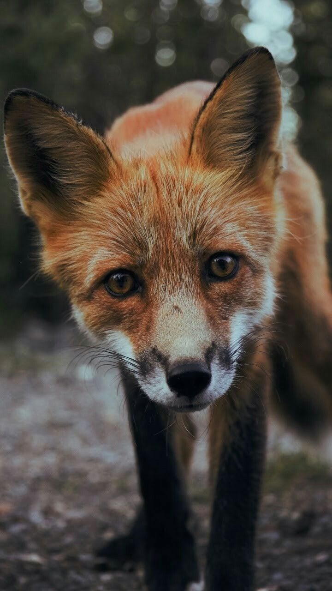

Raposas
da família CanidaeA raposa é um mamífero carnívoro que se assemelha com o cachorro doméstico, pertencendo à mesma família deles, Canidae. Há espécies de raposas distribuídas globalmente, habitando diversos tipos de ambiente. Mas, somente as raposas “verdadeiras” são pertencentes ao gênero Vulpes e representadas por cerca de 10 espécies. No Brasil, a raposa-do-campo (Lycalopex vetulus) é a única espécie de raposa do país e é endêmica do bioma Cerrado. Infelizmente, por conta das ameaças que esse bioma sofre, a região de vegetação apresenta apenas cerca de 20% de sua área original, o que ameaça a sobrevivência da raposa.

Em geral, a raposa mede entre 81 e 145 centímetros de comprimento (com a cauda) e pesa entre 3 e 8
quilos. Trata-se de um animal peludo que apresenta coloração variada dependendo da espécie, como a
raposa-vermelha e a raposa da Antártica, esta que é toda branca para se camuflar no gelo. As orelhas são
pontudas e o focinho é curto.
A nossa representante brasileira, a raposa-do-campo, é um dos menores canídeos do mundo. Possui a
pelagem curta, de coloração cinza claro no dorso e mais amarelada no ventre. Na cauda, os pelos são
longos e possuem uma base negra, característica que a diferencia do graxaim-do-campo (Lycalopex
gymnocercus). Já a pelagem de suas orelhas e patas são avermelhadas.
Como a maioria das raposas, a raposa-do-campo tem hábito crepuscular-noturno e é solitária. Essa é uma espécie monogâmica que só forma pares durante a época reprodutiva e de criação dos filhotes.
As raposas habitam tocas que foram abandonadas por outros animais. A nossa representante brasileira ocorre no bioma Cerrado, preferindo vegetação mais escassa e espaçada.
As raposas são animais carnívoros que consomem principalmente aves e pequenos mamíferos. No entanto, a raposa-do-campo tem grande parte de sua dieta no consumo de cupins, sendo classificada como um animal insetívoro-onívoro.
- Reino: Animalia
- Filo: Chordata
- Classe: Mammalia
- Ordem: Carnivora
- Subordem: Caniformia
- Família: Canidae
- Domínio: Eukaryota
A maioria das raposas se reproduz anualmente e a fêmea pode dar à luz a até 14 filhotes em uma ninhada. As fêmeas de raposa-do-campo têm ninhadas de 2 a 5 filhotes que nascem entre julho e agosto, dentro de uma toca abandonada pelo tatu-peba. O período gestacional é por volta de 1 mês e meio.
Os filhotes são amamentados até cerca de 4 meses de idade, dispersando-se dos pais a partir dos 10 meses. Nessa espécie, tanto a mãe quanto o pai realizam o cuidado parental, sendo o pai responsável por trazer comida para os filhotes e protegê-los contra predadores. A raposa pode viver até os 67 anos de idade.